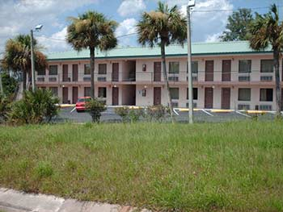

Melhores dicas

Segurança em Orlando: escolhendo o seu hotel
Muita gente nos pede indicação de hospedagem em Orlando, mas essa é uma resposta muito difícil de dar. O hotel que pode ser bom para mim, pode ser ótimo para uns e péssimo para outros. Tudo depende do que está se buscando: uns preferem preço, outros conforto, uns querem ficar mais próximos dos parques e outros dos shoppings.
Um tempo atrás, a Re escreveu uma matéria bem legal sobre os tipos de hospedagem que você vai encontrar em Orlando (leia aqui a matéria completa), mas agora quero contar um pouco como eu escolho o hotel que vou me hospedar por lá.
Wyndham Lake Buena Vista, hotel muito bom e seguro que fica dentro da propriedade da Disney, mesmo não sendo operado por ela
O tipo de hospedagem
A primeira coisa que eu defino quando vou viajar a Orlando é o tipo de hospedagem que eu vou querer. Se vou ficar um tempo longo na cidade, considero as opções de Condos, que são os apartamentos em condomínios fechados e que oferecem uma infra estrutura um pouco mais completa (leia mais sobre o World Quest e o Blue Heron, dois condos que já testamos e aprovamos). Se minha viagem será mais curta, procuro um hotel mesmo.
Refeições incluídas
Nos EUA não é comum encontrar hotéis com pensão completa como no Brasil e na Europa. No entanto, alguns hotéis podem oferecer café da manhã incluído ou por um preço bem em conta. Isso pode ser uma boa vantagem, mas em geral eu prefiro comprar alguma coisa no supermercado (ou no Perkins), como um suco ou um cereal e comer a caminho dos parques mesmo.
Escolhendo o hotel em Orlando com segurança
Depois de definir o tipo de hospedagem que eu quero, é hora de buscar as ofertas disponíveis por aí. Sites como booking.com são uma mão na roda e os preços podem variar bastante, então não deixe de pesquisar muito bem. Após escolher os hotéis mais promissores, eu vou consultar o que as pessoas que já se hospedaram, acharam deles. Para isso, prefiro usar o Trip Advisor, já que os comentários ali são bem mais confiáveis do que os que eu encontro nos sites de reserva.
Em geral, eu não ligo muito para comentários como “o a pintura do hotel está gasta”, “encontrei um cabelo no fundo do armário”, “as dobradiças da porta do banheiro estavam enferrujadas”, mas cada um com as suas preferências. Fico mais preocupado com comentários que falam do atendimento, de problemas com a reserva, da localização, do barulho e até de questões ligadas a segurança.
Avaliações ruins de um hotel em Orlando. E ainda uma avaliação de um um ex-hóspede que foi roubado dentro do seu quarto.
Segurança, um ponto importante e uma opinião pessoal
Como toda a cidade turística, o que não falta em Orlando são hotéis. Espalhados por todos os bairros da cidade, alguns hotéis são mais vulneráveis do que outros. Eu mesmo, nunca sofri nenhum tipo de assalto ou roubo na cidade, mas relatos de amigos e de outros turistas me fazem ficar mais alertas do que nunca na hora de escolher o meu hotel.
Procuro sempre ficar em hotéis mais afastados das zonas mais centrais, como a região da International Drive. Por ter muitos turistas, principalmente brasileiros que gastam milhares de dólares em compras, essas regiões acabam sendo mais visadas pelos oportunistas. Em geral, gosto dos hotéis que ficam em Lake Buena Vista, que as vezes são levemente mais caros, mas sem dúvida menos foco de assaltos.
Mas como disse, essa é a minha opinião pessoal.
Algumas dicas importantes:
- Pelo Trip Advisor, verifique se algum hospede já teve problemas com roubos e assaltos naquele hotel. Já deixei de ficar em hotéis pois li comentários de pessoas que tinha sofrido algum tipo de perda.
- Pergunte se o seu hotel tem cofre, para que você possa deixar algum bem de maior valor.
- Evite hotéis sem recepção e sem nenhuma forma de controle de acesso. Nos EUA muitos hotéis são abertos e tem somente uma recepção do lado de fora e sem nenhuma outra forma de controlar o acesso, deixando a passagem livre pra quem quiser entrar. Chamados de motéis (não confunda com os motéis que conhecemos no Brasil), esse tipo de hotel fica muito vulnerável a qualquer tipo de roubo.
- Não deixe o seu passaporte no hotel, a menos que ele esteja trancado no cofre. Os mais cautelosos não confiam nem nos cofres e não cogitam deixar o passaporte no hotel em hipótese alguma. Esse é o seu único documento válido no exterior, então prefira sempre andar com ele muito bem guardado. Além disso, deixe cópias das primeiras folhas do seu passaporte mais da folha do visto no hotel, caso você perca o original. A cópia não tem validade nenhuma, mas pode te ajudar na hora de conseguir dados para falar no consulado em caso de perda ou roubo.

Evite hotéis sem controle de acesso aos quartos, como o da foto acima. Qualquer um pode bater na porta do seu quarto.
- No quarto, deixe suas compras dentro das malas com cadeado e evite deixar os eletrônicos muito a mão, especialmente se você usar o serviço de arrumadeiras. É lógico que nada disso evita um potencial roubo, mas pode dificultar um pouco a ação dos oportunistas. Além disso, nunca deixe sacolas e caixas das suas compras do lado de fora do seu quarto no hotel. Esse é um sinal claro que você fez muitas compras. Assim que guardar as suas compras, se desfaça de todas as sacolas em algum ponto longe do seu quarto.
- Uma outra coisa, que parece besteira, mas eu sempre faço é deixar a televisão do quarto ligada. Assim, sem arrumadeira e com um barulho vindo de dentro do quarto, eu imagino que posso estar prevenindo um roubo.
- Verifique a porta do quarto sempre que sair dele. Isso porque as vezes a porta fica emperrada e não fecha completamente. Quem estiver passando por ali pode ficar tentado a entrar no quarto. Lembre-se: a oportunidade faz o ladrão.
Sei que tudo isso pode parecer um pouco assustador, mas como eu disse, nós nunca fomos vítimas de roubo em Orlando, e acredito que muitos problemas podem ser evitados quando a gente se previne. Pequenas atitudes como tomar cuidado com a bolsa, escolher uma região bacana para se hospedar e seguir as dicas que demos sobre segurança nas compras (clique aqui se você ainda não leu as dicas) podem fazer muita diferença nas suas férias. A idéia aqui é ajudá-los a garantir uma viagem tranquila. Com essas dicas, você vai escolher um bom hotel na cidade e evitar qualquer problema durante os seus dias na terra da magia.
Gosto dos condos, que ficam dentro de condomínios fechados e tem segurança 24h. O da foto é o WorldQuest, que já falamos em uma outra matéria.